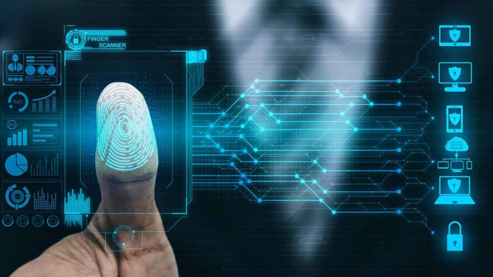
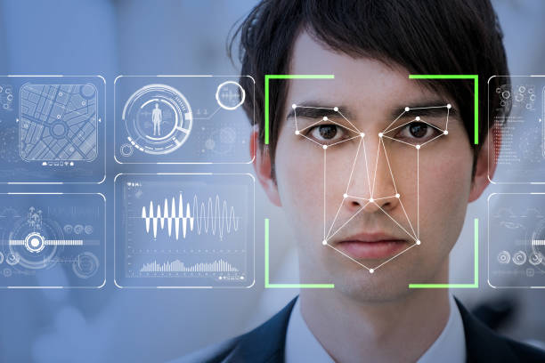

Advancements in biometric technology have revolutionized security measures across various domains, from personal devices like smartphones to global immigration systems. The integration of biometric authentication methods, such as fingerprint scanning and facial recognition, has provided enhanced security while ensuring convenient access. These technologies offer a robust and reliable means of verifying identity, reducing the risk of unauthorized access and identity theft. Moreover, biometrics enable seamless authentication processes, streamlining security procedures and improving user experience. As biometric technology continues to evolve, its widespread adoption underscores its pivotal role in safeguarding sensitive information and bolstering security worldwide.
Biometric Technologies
Fingerprint Scanners
Fingerprint scanners have become ubiquitous in everyday devices, serving as a primary method of biometric authentication. They are commonly integrated into smartphones, laptops, and tablets, offering convenient and secure access to personal devices and sensitive data. Users can unlock their devices, authorize payments, and access secure applications with a simple touch of their fingerprint. Fingerprint scanners have also found their way into physical access control systems, such as building entrances and time attendance systems, enhancing security measures in various environments. Their widespread adoption underscores the reliability, ease of use, and effectiveness of fingerprint biometrics in ensuring both convenience and security in daily interactions with technology

A fingerprint scanner in use
Facial Recognition Systems
Facial recognition systems offer significant implications for both security and privacy. On one hand, they provide advanced surveillance capabilities, enabling rapid identification and tracking of individuals in various contexts, from law enforcement to access control systems. However, concerns about privacy invasion escalate due to the potential for mass surveillance, tracking individuals' movements without their consent. Additionally, biases in facial recognition algorithms pose risks of misidentification and discriminatory practices, exacerbating privacy and civil rights concerns. Ethical considerations also arise regarding the use of facial recognition data, including issues of consent, transparency, and the potential for misuse by authoritarian regimes or commercial entities. Thus, careful regulation and oversight are crucial to balance the security benefits with privacy protections in the deployment of facial recognition systems.

Facial recognition system
Security Enhancements
Biometrics have significantly bolstered security measures by providing a highly secure method of authentication, as each individual possesses unique biological traits. This uniqueness makes it extremely difficult for unauthorized individuals to gain access to sensitive information or restricted areas. Moreover, biometric authentication reduces the risk of identity theft and fraudulent activities, as it is challenging to replicate or forge biometric data. However, there are potential risks involved, such as the possibility of data breaches leading to the compromise of biometric information. Additionally, concerns arise regarding the privacy implications of storing and utilizing biometric data, necessitating robust security protocols and ethical considerations in its implementation.
Privacy Concerns
Widespread biometric use raises profound ethical considerations and privacy issues, primarily concerning individual autonomy and consent. Biometric data, being inherently personal and immutable, presents the risk of irreversible privacy breaches if compromised. Concerns arise regarding the potential misuse or unauthorized access to biometric information, leading to identity theft or surveillance abuses. Furthermore, the collection and storage of biometric data by both public and private entities raise questions about transparency, accountability, and the rights of individuals to control their own information. As such, robust legal frameworks and ethical guidelines are necessary to safeguard privacy rights while harnessing the benefits of biometric technology.